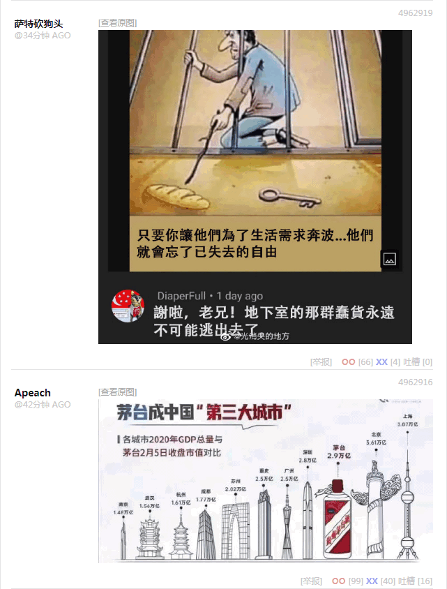

前一篇
目录
后一篇
主页
［
20210707
］朝廷动员叫「征兵募将」，土匪动员才叫「招兵买马」
——“咱们效力的是哪个国吖？这么鬼鬼祟祟形迹可疑？可别是‘伊拉克与叙利亚的伊斯兰国’吧？”
——“老杂种操的哪儿那么多废话？！领导叫你干嘛就干嘛，别的甭问！再啰嗦我把酒泼你丫脸上！”
如果不是「人民武装部」而是「非政府组织」深入基层走街串巷到处约谈群众煽动「为国效力」，就得琢磨琢磨到底是哪个「国」了。

2021-07-07 10:47:36